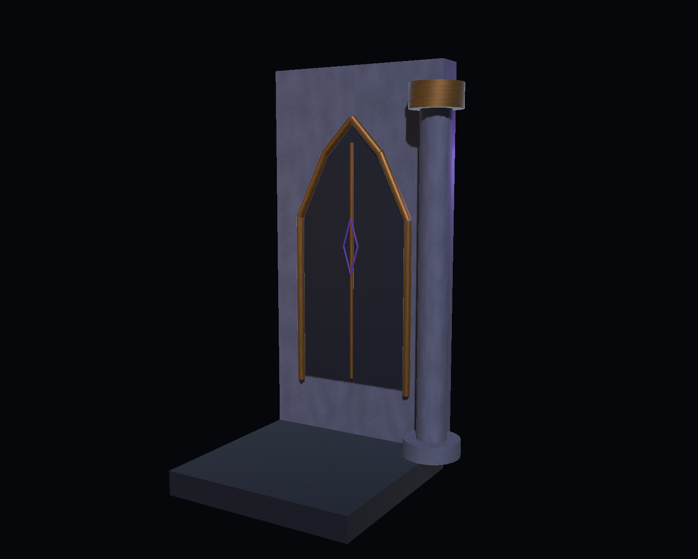
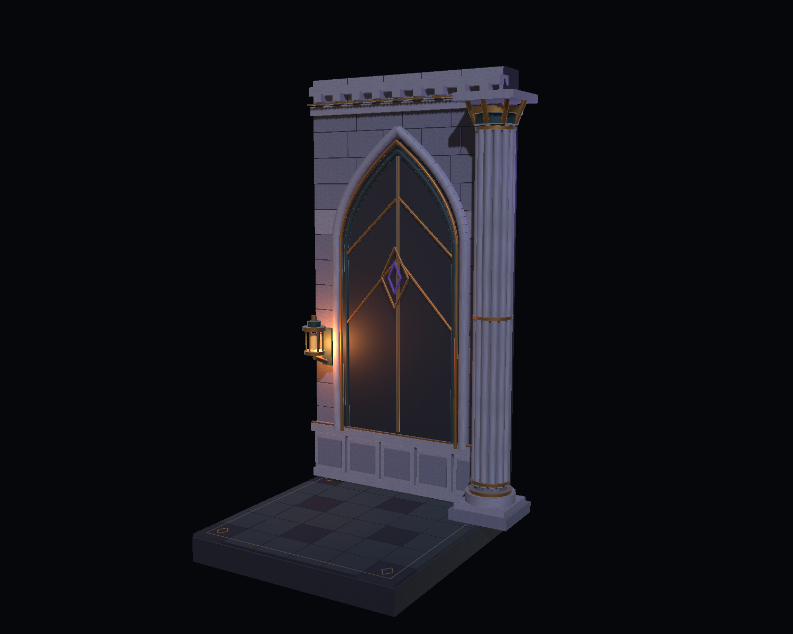
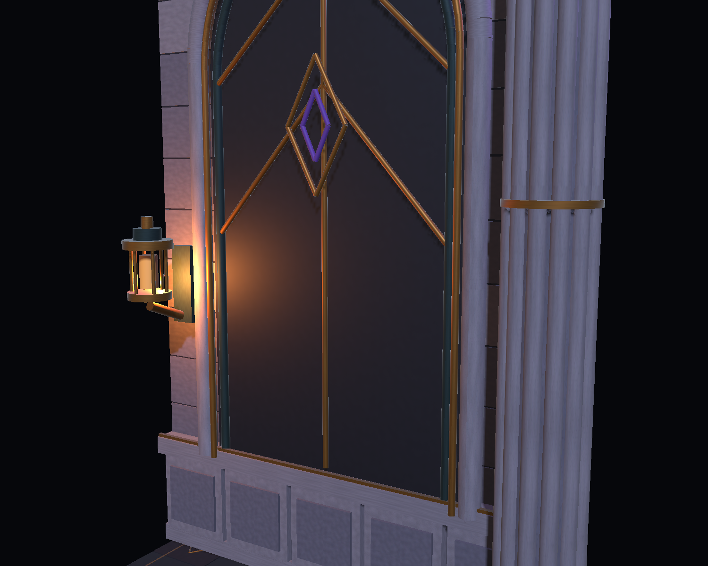
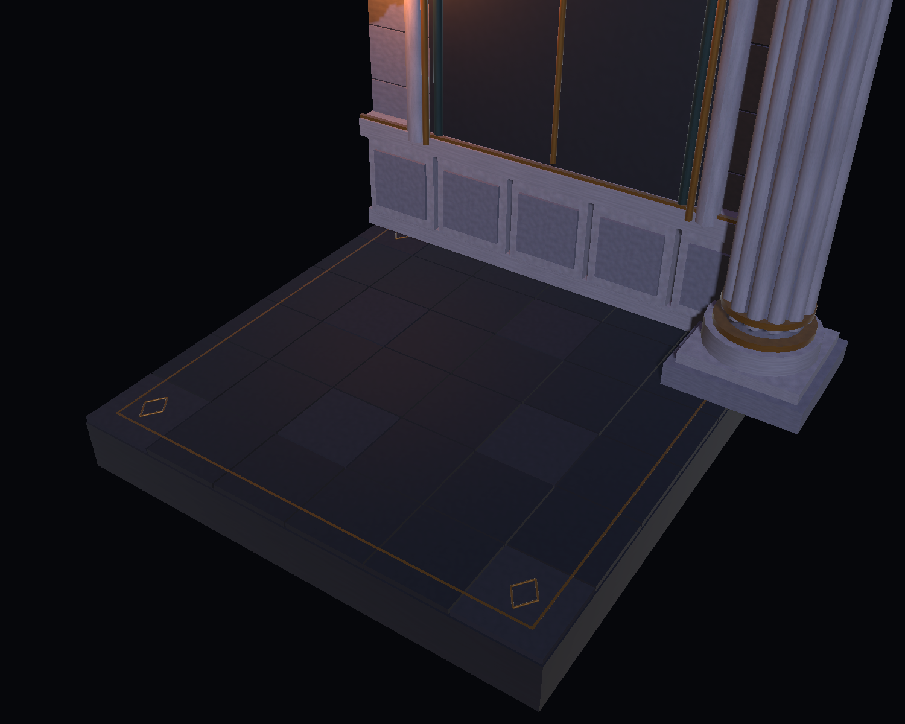

IM MONSTER / ART STUDY / 2026.10.24
封印厅 · 石、黄铜与缄默的光
一段墙、一根柱、一块地面与一盏灯。保留既有哥特建筑语言，增加石作层次与近距离细节；暖光引导视线，紫色克制地点出封印。
自主尝试，待 Client 决定采用。左图是依据 1.0.6 建场代码重建的局部结构参考，不是原关卡截图。两图使用相同展示相机与公共灯光，右图增加自身灯笼点光；完整战斗场景尚未接入。

01 / 结构参考
简化的盲拱、平直墙面与圆柱。用于比较局部构件层次。

02 / 精修小样
石块与墙裙、分层拱线、簇柱及黄铜灯具。

03 / 近景细节
构件层次由几何实现；材质与静态网格随工程保存。

04 / 地面
低对比拼板与边缘嵌线。平整碰撞面；圆形大厅适配仍待后续。
查看 使用及导入说明 · 结构验证记录。本页展示的是 Unity 实际离屏渲染，不是概念生成图。